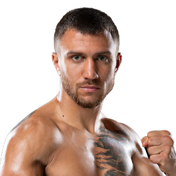

Vasyl Lomachenko
Vasyl Lomachenko, conocido como "Hi-Tech", es un boxeador ucraniano que ha dominado la categoría de pesos pluma.
Vasyl Lomachenko, conocido como "Hi-Tech", es un boxeador ucraniano que ha dominado la categoría de pesos pluma.
Manny Pacquiao, también conocido como "Pac-Man", es un boxeador filipino que ha sido campeón mundial en múltiples categorías, incluyendo pesos welter.
Anthony Joshua es un boxeador británico que ha dominado la categoría de pesos pesados y ha sido campeón unificado.